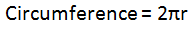

Mixed ints and doubles Programs
Complete the following programs. Some use doubles in order to preserve the decimals, while some use ints for mod and special division.
Averager - Create a program named Averager that prompts the user for three numbers, then returns the average of the three numbers.
Example:
Please enter the first number:
6
Please enter the second number:
1
Please enter the third number:
3
The average of 6, 1, and 3 is 3.3333333333333
MinSec - Create a program named MinSec that asks the user for a length of time in seconds, and then tells you how long that is in minutes and seconds.
Example:
Enter a time in seconds:
135
135 seconds is 2 minutes(s) and 15 second(s)
Circumference - Create a program named Circumference that will prompt the user for the radius of a circle, and then print out the circumference of the circle. Use 3.14159 for pi.

Example:
Please enter the radius of the circle:
7
The circumference of a circle of radius 7 is 43.98226
Taxer - Create a program named Taxer that asks the user how much they paid for a car. Then calculates how much the user should pay in taxes (use 7.5% or 0.075), and what the grand total should be after taxes. Don't worry about limiting the number to two digits for now.
Example:
How much did you pay?
18999
You should pay $1424.925 in taxes.
Your grand total is $20423.925
HourMinSec - Create a program named HourMinSec that has a similar function to MinSec, but this time the user inputs a total in seconds, which the program will then turn into hours, minutes, and seconds.
Example:
Enter a time in seconds:
5000
5000 seconds is 1 hour(s) 23 minute(s) and 20
second(s)
Similar to before, first figure out how many whole hours there are ( 3600 seconds in an hour ) and how many seconds are remaining. Then use the remaining seconds to figure out how many minutes and seconds there are.
WinLoss - Create a program named WinLoss, which will prompt the user to enter the number of wins a team has and the number of losses that a team has. The program should then print out the team's win percentage in a decimal form, which is found by taking the number of wins divided by the total number of games (not simply wins/losses).
For example:
How many wins?
10
How many losses?
20
Your percentage is .3333333333333